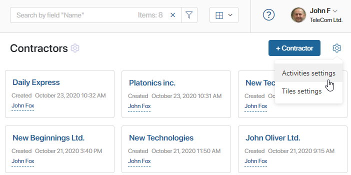
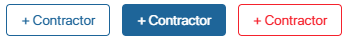
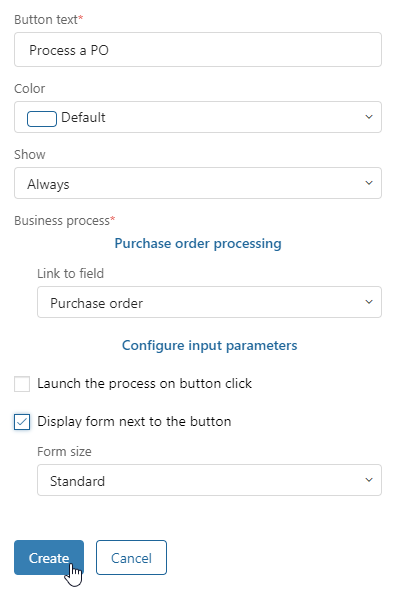
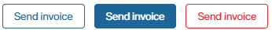

Activities settings allow you to customize the button for creating an app item. Also, you can configure a button for starting a business process directly from the app page.
начало внимание
Only the users included in the Administrators group can set up activities on the app page.
конец внимание
Customize the creation button
In the top right corner of the app page, click the gear icon and select Activities settings.

A gear icon will appear to the right of the button for adding app items. Click on this icon to open the button’s settings.

You can customize the following:
- Button text*. The name of the button as shown on the app page.
- Color. Choose the color of the button.

- Show. Specify in which cases the button will be available to users on the app page:
- Always. Users will see the button regardless of their access permissions.
- If creating is allowed. Only users who have the permission to create app items will see the button.
- Configure default fields. You can set up pre-filled fields on the app item creation page. When a user opens the creation page, these fields will already be filled with the values you enter.
Click Save to apply the changes.
Add a business process start button
In the top right corner of the app page, click the gear icon and select Activities settings.
The plus icon will appear to the right of the item creation button. Click on it and select Add the "Start Process" button.

Fill in the fields in the pop-up window.

- Button text*. Name of the button on the app page.
- Color. Button text.

- Business process. Select the business process that will start when a user clicks the button.
- Link to field. Select the business process context variable that the app item will be passed to.
- Display form next to the button. Check this box if you want the process start form to be displayed below the button, not in a separate window.
- Form size. Select the size of the process start form.
After filling in all the fields, click Create to add the button.